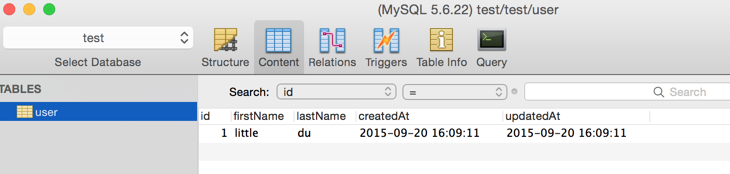

最近做个小东西涉及到了数据库，因此接触到了 Sequelize 这个关系型数据库(ORM)[^orm]框架。用起来感觉很不错(事实上我也没用过其他)，但他的文档非常不友好，搜索功能基本是废的，文档还很冗长，想查点东西非常不方便，故想把我对他的使用记录下来，方便自己以后查阅。
注意：现代文明发展太快，很多时候，隔个半年时间代码就有可能发生了很大变化，导致跟现实不符，这里使用的 Sequelize 版本是 3.9.0
安装
1. 安装 Mysql
1 | brew install mysql |
这里使用 mysql。
2. 安装 Sequel Pro
官网地址：http://www.sequelpro.com/ 。
类似 phpmyadmin，是一个可视化操作工具，界面简洁，功能强大，强烈推荐。
3. 安装 Sequelize
1 | $ npm install --save sequelize |
以上安装完成后，准备工作就算完成了，相信也不需要我讲如何安装 node 环境。直接进入主题。
快速入门
首先，你需要利用 Sequel 创建一个数据库，Sequel 默认会有一个 test 数据库，这里直接用它做测试。
接着创建一个文件写入如下代码：1
2
3
4
5
6
7
8
9
10
11
12
13
14
15
16
17
18
19
20
21
22var Sequelize = require('sequelize');
//连接数据库
//var sequelize = new Sequelize('database', 'username', 'password');
var sequelize = new Sequelize('test', 'root', '');
//定义表结构
var User = sequelize.define('user', {
firstName: Sequelize.STRING,
lastName: Sequelize.STRING
}, {
//设置表名跟定义的一样，如果不设置，默认会加s,如 'users'。
freezeTableName: true
});
//创建表并写入内容
User.sync({force: true}).then(function() {
return User.create({
firstName: 'little',
lastName: 'du'
})
});
运行后结果如图：

如果没有特殊设置，Sequelize 默认会添加两个字段： createdAt 和 updatedAt。或许它认为这是两个很常用的字段吧。
通过上面的代码示例，展示了 sequelize 操作数据库的基本流程：连接数据库 -> 定义模型 -> 操作数据库。
下面，我们就一一介绍一下。
连接数据库
Sequelize 对象的定义为：1
new Sequelize(database, [username=null], [password=null], [options={}])
很明显第 1 个参数为数据库的名字，第 2 个为用户名，第 3 个密码，第 4 个为附加的信息设置。我们直接看官方的示例：
1 | //当然得先引入模块啦 |
连接数据库就是 new 一下 Sequelize 的实例，更详细的说明，如 options，可查看官方文档列表：
http://docs.sequelizejs.com/en/latest/api/sequelize/#class-sequelize
定义模型
连接数据库后，需要做的就是定义表的结构，字段的属性等。在 Sequelize 里通过 sequelize.define 和 sequelize.import 来完成这个操作。
1. sequelize.define
define 函数的定义为：1
define(modelName, attributes, [options])
支持 3 个参数，第 1 个为模型的名字，就是表名;第 2 个是属性，也是字段的定义，第3 个为可选的一个附加信息，用于定义表的一些特殊设置。
在快速入门那里，我们就已经使用过 define 了，也是最基本的模型定义：1
2
3
4
5//定义表结构
var User = sequelize.define('user', {
firstName: Sequelize.STRING,
lastName: Sequelize.STRING
});
如果字段的属性多于一个，还可以如下设置：1
2
3
4
5//定义表结构
var Foo = sequelize.define('foo', {
flag: {type: Sequelize.BOOLEAN, allowNull: false, defaultValue: true},
myDate: { type: Sequelize.DATE, defaultValue: Sequelize.NOW }
})
define 一般是在同一个文件里面就进行了模型的定义和操作，当我们的表很多的时候，文件行数就会很多，维护的复杂度也就增加了，因此，Sequelize 还提供了 import 方法实现将模型的定义与操作分离。
2. sequelize.import
我们还可以将模型的定义单独保存为一个文件，然后通过 import 将模型导入，一个模型(表)为一个文件，将是一个最佳实践。
1 | // project.js 文件里的模型定义 |
1 | // app.js 文件里将模型导入进来 |
如上，我们在 project.js 文件里面定义了 Project 的模型，然后在 app.js 里面通过 import 方法就可以将模型文件导入进来，定义与操作分离，一个模型为一个文件，将大大降低我们维护的复杂度。
扩展：与 model 相关的文档：
数据库操作
当数据库连接完成，表的模型也定义完成，接下来就是对表的各种操作，如创建，查询，更新，销毁等等。接下来，我们以上面快速入门定义的 User 模型为例，简单的当代码片段列举一下。
1. 创建表
1 | //根据 User 模型创建表 |
2. 查询
1. findById
1 | // 通过 id 查询，理论上不常用 |
2. findOne
1 | // 只找一条，找到就返回了，不会继续往下找 |
3. findOrCreate
1 | //如果找不到，则创建一条 |
4. findAndCountAll
1 | //查询并返回总条数 |
5. findAll + all
findAll 和 all 都返回找到的所有实例，不会返回数据表的总数。
3. 删除
1 | //删除 1 条 firstName 等于 dududu 的数据 |
4. 更新
1 | //把 id >= 6 的数据的 firstName 更新为 littledu |
查询条件
来到这里，我们基本掌握了数据库的操作，同时也发现出现频率很高的 where ，limit 等查询条件
1. 条件表达式
1 | $and: {a: 5} // AND (a = 5) |
上面的表达式不仅可以单独使用，还可以组合形成更复杂的条件，如：1
2
3
4
5
6
7
8
9{
rank: {
$or: {
$lt: 100,
$eq: null
}
}
}
// rank < 100 OR rank IS NULL
2. limit
1 | // Fetch 10 instances/rows |
3. offset
1 | // Skip 5 instances and fetch the 5 after that |
4. order
1 | //倒序查询 |
5. raw
查询返回的数据都为 sequelize 实例，信息太多，很多时候我们直接想要各字段的数据，raw 设置为 true 后，则返回的数据为一个 json 对象，可以直接取值，方便。1
Project.findAll({ where: { ... }, raw: true })
未完待续………….
[^orm]: ORM（Object/Relational Mapping）对象/关系型数据映射，也可以理解为一种数据持久化技术，其主要是把对象模型和关系型数据库的表建立对应关系，并且提供了一个通过对象去操作数据库表的机制。